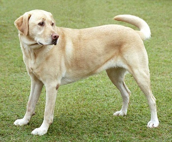
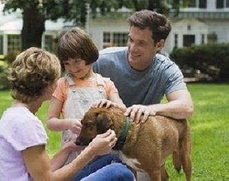

|  |
Dog's Type -Labrador Retriever. Age 2.(Confirmed by a vet.) If you want to adopt it contact me at: egi123@gmail.com or 069*******. This dog was found. |
|  |
Dog's Type -Mutts. Age 3.(Confirmed by a vet.) If you want to adopt it contact me at: suzi@gmail.com or 069*******. This dog was raised by me. |